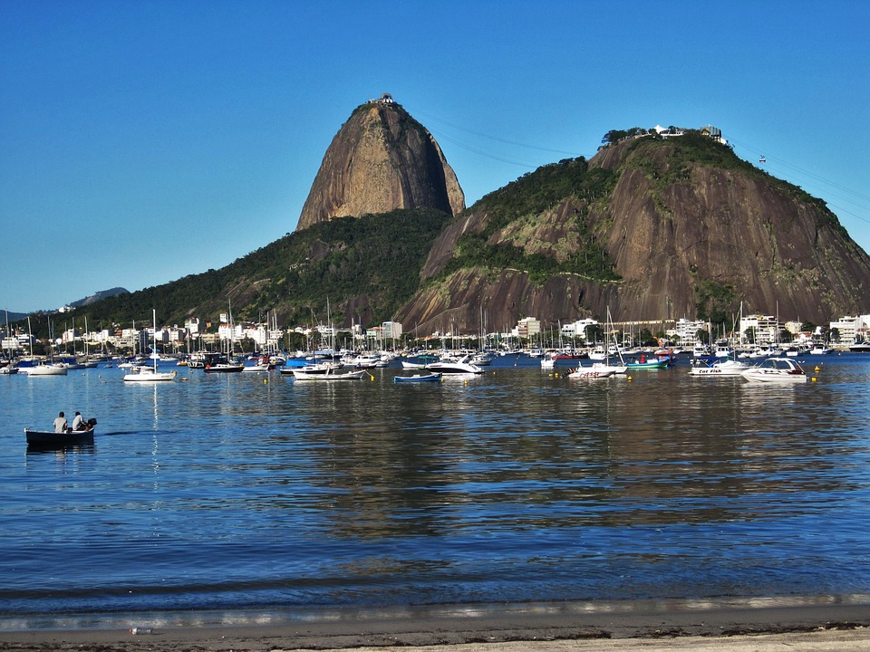

Cristo Redentor
Cristo Redentor é uma estátua art déco que retrata Jesus Cristo, localizada no topo do morro do Corcovado, a 709 metros acima do nível do mar, no Parque Nacional da Tijuca, com vista para a maior parte da cidade do Rio de Janeiro, Brasil.
Pão de Açúcar
O Pão de Açúcar é um complexo de morros localizado no bairro da Urca, na cidade do Rio de Janeiro, no Brasil. É composto pelo Morro do Pão de Açúcar, pelo Morro da Urca e pelo Morro da Babilônia.